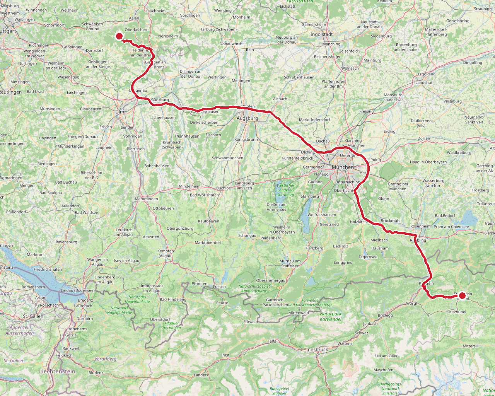
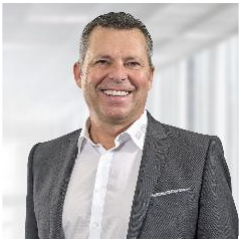
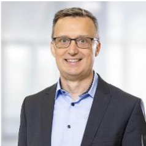
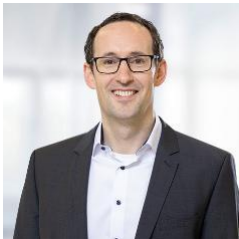
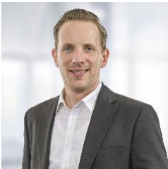
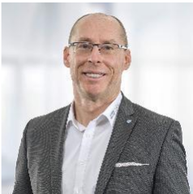
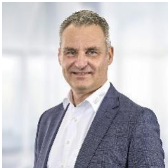
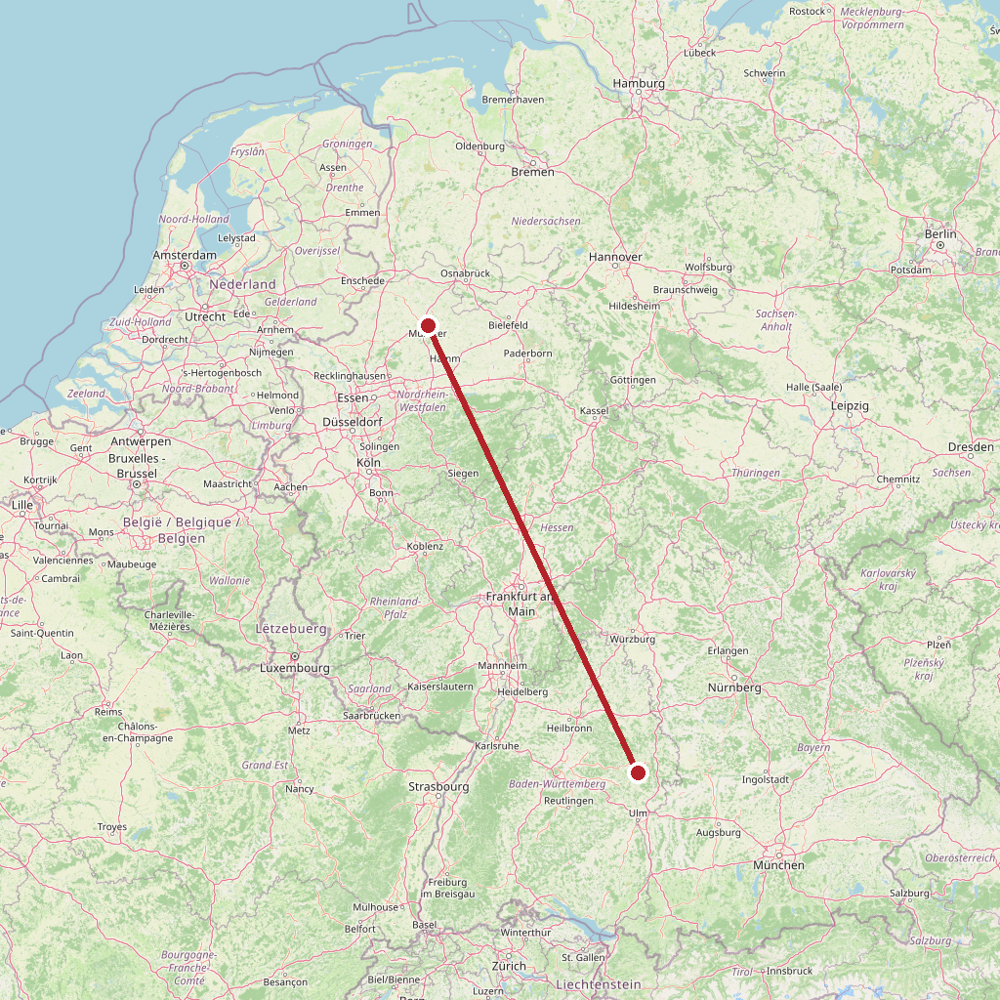

ToDo
Zeitplan
FahrtSt. Johann in Tirol → Bartholomä · 312 km · reine Fahrzeit 3 h 24
Fahrer Florian Kaufmann. Reisekosten mit dem Kunden vereinbart: 400 € (WhatsApp Daniel, 06.10.).

ChristophHarro Höfliger — Workshop Marketing-Team, ca. 4 h
Location in Bartholomä noch unbekannt. Publikum laut Kennenlern-Call 06.10.: die interne Marketing-Agentur, „so eine Marketingabteilung mit 22 Leuten", Alter „von 60 bis mittel 20". Termin wiederkehrend: „letztes Jahr war es Dienstag". „wenn wir um 13 Uhr anfangen würden, müssten Sie um 17 Uhr gehen."
| Auftrag | „Den Impuls zu setzen, dass die KI für jeden Einzelnen eine Chance darstellt" · „Da sind vereinzelt schon noch Ängste in den Köpfen, vor allem dann auch bei ein bisschen älteren Teammitgliedern." · „Also KI als Bereicherung unserer Arbeit." |
| 2000 Co-Kreatoren | Interne Kunden kommen mit KI-Entwürfen: „guck mal, was ich da schön in der KI erstellt habe, könnt ihr das nicht so machen." · „Also potenziell haben wir 2000 Co-Kreatoren." Auf deine Frage, was fehlt: „Umgang mit unseren 2000 Co-Kreatoren. Weil das sorgt aktuell immer für Reibungsdruck." |
| KI-Stand | „Also wir nutzen KI schon, aber bei weitem nicht das volle Potenzial." Microsoft-Umfeld: „müssen wir uns halt des Co-Pilots bedienen". Agenten baut nur ein zentrales KI-Core-Team. Routinen: „Listen, führen, Listen ergänzen", E-Mails „vorsortieren, beantworten". Gefunden haben sie dich über Copilot. |
| Marketing | Keine Lead-Generierung, sondern „Reputationsmanagement", vor allem Messen und Events. Vertrieb und Personalmarketing „fast eine 50-50-Gewichtung". GEO schwierig: das Portfolio sei „dazu angetan, die LLMs ein bisschen zu verwirren". Webseiten-Dienstleister wird gerade gewechselt. |
| Organisation | „es wird einen Führungswechsel geben … ab 2028". Frage, wie sich die Agentur künftig aufstellt. Homeoffice 60/40. |
| Deine Zusage | Keine Übungen, „ich würde mich auf die Gedankenexperimente stürzen". Themen per Abstimmung: Agenten, GEO, Grenzen neuronaler Netze, Halluzinationen, KI-fähige Corporate Identity, Fertigung der Zukunft. |
Daniel hat am 28.10. Leitbild und Führungsgrundsätze geschickt — von dir im Call erbeten.
| Unternehmen | Familienunternehmen, gegründet 1975, Sitz Allmersbach im Tal. Sondermaschinenbau für Pharma, Medizintechnik und Konsumgüter. Claim „ALL YOU NEED". Purpose: „Wir liefern zukunftsfähige Technologien und leisten damit einen Beitrag für die Gesundheit von Millionen Menschen." |
| Zahlen | Umsatz 2025: 480 Mio. €, Plan 2026: 520 Mio. € · 2.450 Mitarbeitende 2025, Plan 2026: 2.650 |
| Märkte | Europa 46 % · Nordamerika 28 % · China 14 % · Emerging Markets 12 % |
| Aufträge | Plattformmaschinen 51 % · Standardmaschinen 19 % · Customer Service 14 % · Prototypen 13 % · Dienstleistungen 4 % |
| Personal | Konstruktion und Steuerungstechnik 32 % · Produktion und Materialwirtschaft 29 % · Kaufmännisch 12 % · Pharma/Device/Customer Services 11 % · Vertrieb und Projektmanagement 10 % · Azubis und Studierende 6 % |
| Standorte | Allmersbach (Parenteral Device Assembly, Pharma) · Aspach (Fertigung, Logistik) · Backnang · Oppenweiler · Satteldorf · Schlierbach · neu: Debrecen/Ungarn (Ende 2025) · Bangalore/Indien (110 Mitarbeitende) |
| Gründer | Harro Höfliger, 1937–2019: „Wir sind und bleiben: Ein zukunftssicheres Familienunternehmen – attraktiv für Mitarbeitende und Partner." |
| Aktuell | 50-Jahre-Jubiläum 2025, Motto „Future since 1975". Kooperation mit dem Fraunhofer IPT zur automatisierten Produktion von Zell- und Gentherapien. |
Geschäftsführung
 | Thomas Weller · CEO |
 | Marco Laackmann · CSO |
 | Timo Graf · CTO |
 | Alexander Herb · CFO |
 | Thomas Heckner · COO |
 | Uwe Amann · CHRO |
Aufsichtsrat: Markus Höfliger (Vorsitz) · Hartmut Jenner (Vorstandsvorsitzender Kärcher) · Siegfried Drost (ehem. GF Uhlmann). Quelle: Company Profile vom 06.10.2026.
FehltNamen der Ansprechpartner. Im Call: Marketing-Leitung plus Kollege; Daniel ist Ansprechpartner für Honorar und Reisekosten.
FahrtBartholomä → Münster · 542 km · reine Fahrzeit 5 h 28
Weiter zum KI-Tag der DRV Westfalen. Hotel Kaiserhof Münster gebucht — Details auf der DRV-Seite.

Historie des Auftrags
| 05.10.2026 | Daniel per WhatsApp: „morgen 09:00 Uhr bitte Kennenlern-Call mit Firma Harro Höfliger, eine Anfrage für 2.11." Termin im Speaker-Kalender. |
| 06.10.2026 | Kennenlern-Call 09:00, Sprachmemo 45 Min. Marketing-Team, 4-h-Workshop am Montagnachmittag, danach Weiterfahrt nach Münster. |
| 06.10.2026 | Daniel: „wollen wir st. johann nach bartholomä mit Reisekosten von € 400,- machen?" |
| 08.10.2026 | Daniel: „von Harro Höfliger haben wir für den 2.11. den Zuschlag erhalten." |
| 13.10.2026 | Eintrag „Kunde", 02.11. 13:00–17:00, im Speaker-Kalender. |
| 28.10.2026 | Daniel schickt Firmeninfos: Company Profile, Leitbild, Führungsgrundsätze, Kundenmagazin HARRO 15. |